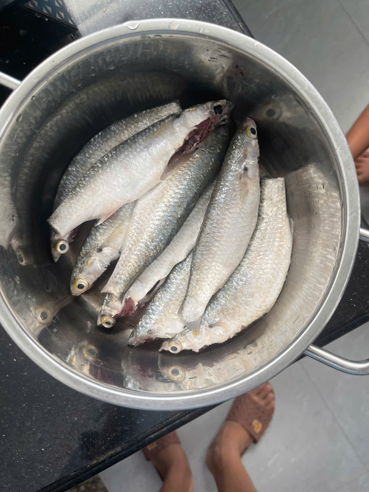
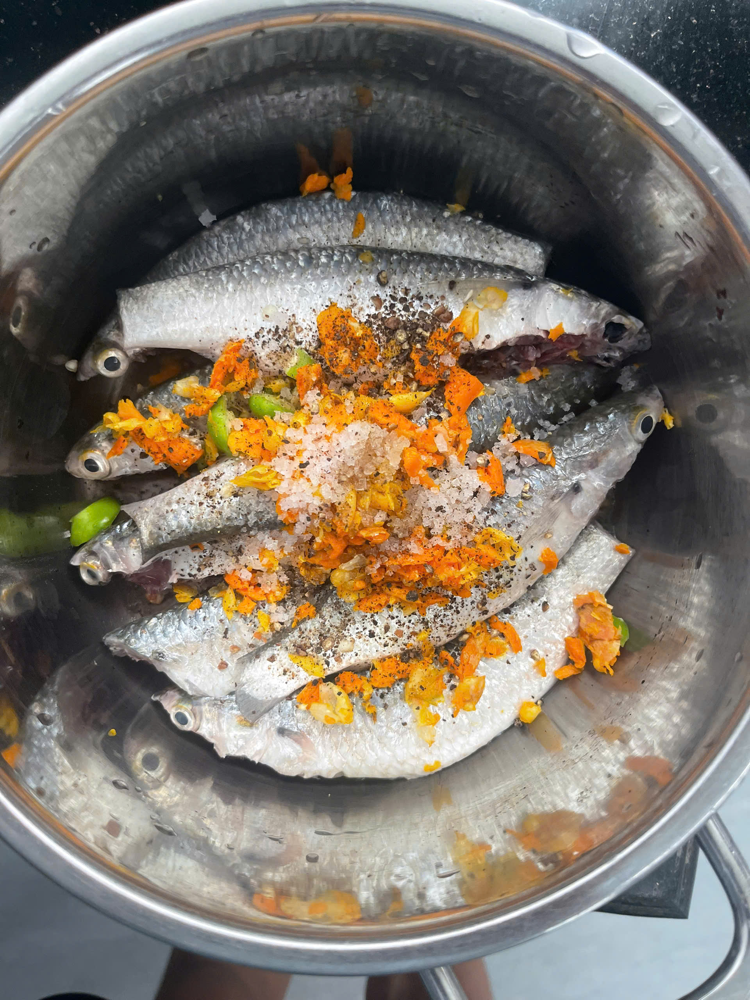
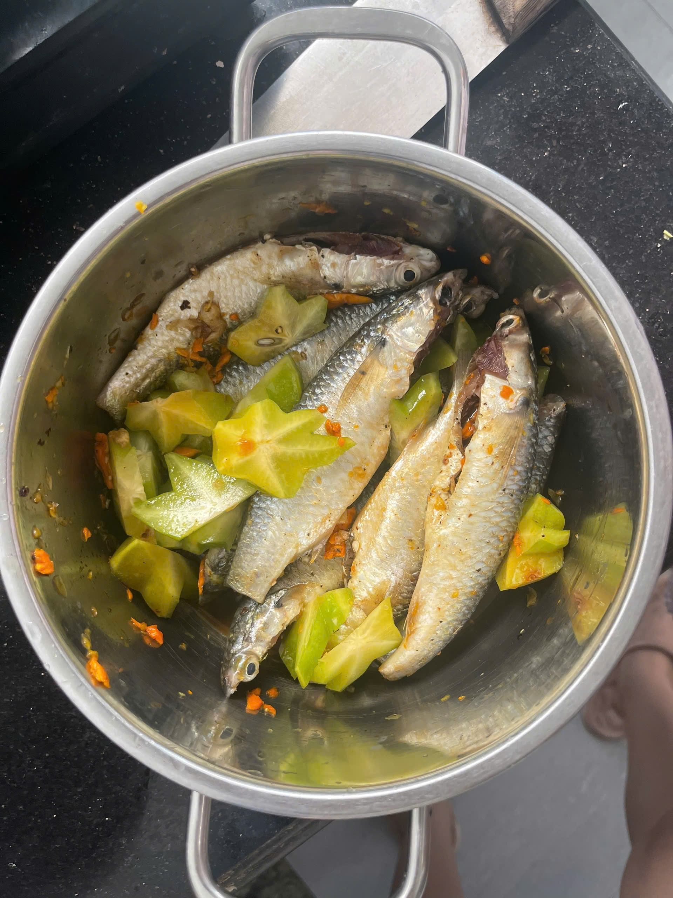

Cá Đối Kho
1. Giới Thiệu Món Ăn
Nguồn gốc: Cá đối kho là món ăn đậm đà nét ẩm thực dân dã truyền thống Việt Nam, vô cùng quen thuộc và đưa cơm trong bữa ăn gia đình.
Tác dụng: Món ăn bồi bổ cơ thể, tốt cho tim mạch, hỗ trợ hệ tiêu hóa và giúp bữa ăn thêm ngon miệng, không bị ngấy.
Chất dinh dưỡng cung cấp: Giàu đạm (Protein) dễ tiêu hóa, chứa lượng lớn Axit béo Omega-3, Vitamin D, Canxi và các khoáng chất thiết yếu.
2. Nguyên Liệu Chuẩn Bị
- Cá đối tươi (làm sạch)
- Ớt tươi, nghệ tươi, hành tăm
- Khế chua (thái lát vừa ăn)
- 1 cốc nước chè xanh (nước trà)
- Gia vị: Muối, tiêu, nước mắm, hạt nêm...
3. Các Bước Thực Hiện
Bước 1: Sơ chế cá
Cá đối mua về đánh vảy, bỏ mang và rửa thật sạch ruột bên trong để cá không bị đắng và tanh.

Bước 2: Ướp cá với gia vị
Thêm các gia vị gồm ớt, nghệ tươi đập dập, hành tăm, muối và tiêu vào ướp cùng cá để khử sạch mùi tanh và tạo màu sắc đẹp mắt.

Bước 3: Thêm khế và đảo đều
Cho khế chua đã thái lát vào nồi cá ướp, nhẹ tay đảo đều để vị chua tự nhiên của khế thấm đều vào từng khúc cá.

Bước 4: Kho cá với nước chè
Đổ 1 cốc nước chè xanh vào nồi cá, bắc lên bếp đun sôi rồi hạ nhỏ lửa riu riu. Kho cho đến khi nước trong nồi kho sắc lại và sắp cạn nước.
Thành Phẩm Hoàn Thành
Món cá đối kho thơm lừng hương nghệ và hành tăm, thịt cá săn chắc thấm vị chua nhẹ của khế kết hợp với vị chát dịu của nước chè xanh vô cùng đậm đà.